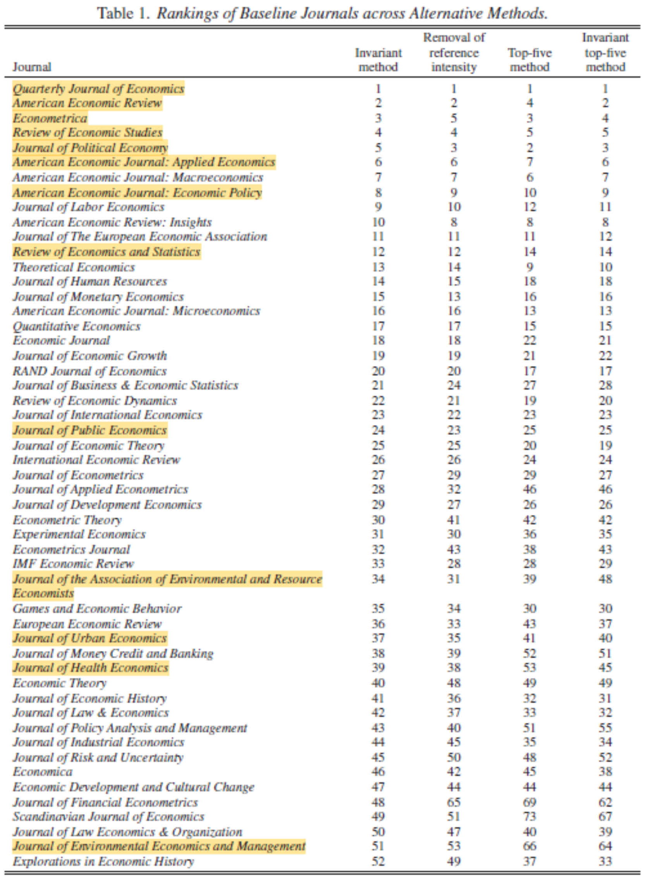

ここでは環境経済学分野で投稿を考えている研究者，同分野で論文（学士・修士・博士は問いません）を執筆するために先行研究を知りたいと考えている大学院生，同分野における政策やビジネスを考える上で同分野でより信頼性の高い研究成果を知りたいと考えている実務家向けに同分野の代表的な学術誌をランキング形式でリストしています．(2024年5月執筆)
いかなる学術誌のリストも（ランキングを意図しないものであっても），本質的に何らかの評価の指標・基準に基づいて作成せざるを得ません．ここで紹介するリストも，私なりの評価基準に従って作成されています．私が大事にしているのは，その学術誌に掲載された論文が平均的かつ相対的な意味でより信頼しうるか否かです．
科学的・学術的な研究には「絶対に正しい知見」というものは存在しませんが，より多くの，より優秀な研究者が，過去に積み上げられた知見に基づきより正しい知見を積み上げていくことによって，これまでよりもより正しい知見を確立していくという意味で，分野全体として平均的・相対的により正しい知見を確立していくものだと思っています．今の時代は “研究成果”“エビデンス”と呼ばれるものがより多くの媒体で紹介されるようになってきました．残念ながら，必ずしも信頼しうる結果ではなくとも，自分の主張を都合よく裏付けしてくれるために，多くの人に支持されてしまうことがあります．私は，社会をより良いものにしていくためには，より正しい科学的知見に基づき意思決定していくことが必要不可欠だと考えています．ここで紹介しているのは，このような意図から平均的かつ相対的な意味でより信頼しうる学術誌をランキング形式でリスト化したものです．
各ランクの難易度は，ワンランク上がるごとに本数を5～7本程度乗じたものと考えると分かり易いと思います．例えば，Aランクのジャーナルの研究論文1本は，Bランクのジャーナルの5～７本程度に相当します．（実際に私自身が論文執筆に要した研究時間で考えても，概ね，1ランク上がるごとに数倍の研究時間を要していると思います）．一般に私の分野で「トップ・ジャーナル」という場合，下記のAないしA－以上のジャーナルを意味します．
また以下のリストを参照頂く上で，少し細かい注意事項が幾つかあります．
- 注意事項(１)：客観的な指標として2023年のScimago Journal Rank (SJR)スコアを利用していますが，その学術誌に掲載された論文を読んだ上での評価も加味しています．全ての学術誌ではありませんが，投稿・査読した経験がある場合は，その際のEditorや他の査読者の質も加味しています．SJRだけでは質や信頼性の評価が難しい理由については下記※1を参照．
- 注意事項(２)：このリストは環境経済学（特に実証）分野の評価に基づいています．経済学として評価できない論文が多い学術誌は低く評価されています．環境分野というだけであれば評価は変わりますし，他の経済学分野における評価もまた別になります．但し，他の経済学のテーマに「環境」を入れた研究であれば同じような評価になります．この点については下記※2を参照してください．
- 注意事項(３)：学術誌の難易度，信頼性，ランキングは時代とともに変化します．以下のリストは，あくまで2024年時点の情報に基づく目安として利用して下さい．
- 注意事項(４)：学術誌に掲載される論文にはバラつきが存在します．Aランクの学術誌の中には，質（新規性/汎用性，重要性，信頼性）においてBランクに劣るものもあれば，その逆も存在します．実際に読んでみて，主張の正しさや質を判断するようにしましょう．学術誌の“質”の平均と分散のイメージは下記※3を参照してください．
- 注意事項(５)：学術誌の査読の難易度，質（汎用性，信頼性，新規性），引用数の間にはある程度の相関がありますが，その関係性は線形でもなければ，常に正の関係でもありません．この点については下記※4を参照してください．
- 注意事項(６)：環境経済学には様々な小分野が存在します．同じ学術誌でも分野間で難易度や質は大きく違う可能性があります．この点については※2を参照して下さい．
- 注意事項(７)：環境経済学分野は経済学の中では比較的マイナーな学問分野のため，メジャーなジャーナル・ランキングが間違った情報を伝えている場合があります．例えば，有名なABDCリストは（2023年11月時点では）環境経済学分野に関しては同分野の研究者の目からみるとかなり間違ったランキングになっていると思います．
環境経済学分野の学術誌リスト
A＋＋：QJE, JPE, Econometrica, RES, AER
A＋：AEJ:Applied, AEJ:EP, REstat
A：Economic Journal, JPubE, RAND Journal, JAERE
A－：JEEM, JUE
B+：Energy Economics, Energy Policy, AJAE, Ecological Economics
B: Transportation Research Part D, Resource and Energy Economics, Environmental and Resource Economics, Environment and Development Economics, Land Economics
C：Environmental Economics and Policy Studies，環境系和文ジャーナル
追記：2025年のThe Economic Journal誌に最新の経済学分野のランキングが掲載されました．こちらでも上記と同様のランキングが示されています．

どういう順番で投稿する？
多くの（特に若手の）研究者にとって，どの学術誌に投稿するかはとても悩ましい意思決定です．より難易度が高いと認識されている学術誌に掲載される方が，次の就職やテニュアの獲得に有利になりますし，その後の研究者としてのチーム作りや研究費の獲得にも有利に働く可能性があります．一方で，難易度の高い学術誌は（経済学の場合は特に）査読が長くなる傾向にありますし，リジェクトされる確率も高くなります．残念ながら，経済学に限らずどの学術分野でも，その学術誌の査読者ネットワーク内で認知されていない人が投稿する論文に対しては査読がより厳しくなる傾向があります．ですので，投稿先についてはこれらのトレードオフを考慮しながらあるていど戦略的に考える必要がでてきます．私の場合は，「受理される可能性はとても低いけれどもコメントを貰う目的で投稿する学術誌」⇒「受理されない可能性は高いけれども，受理される可能性も十分にある学術誌」⇒「本命の学術誌（査読者から好意的なコメントが来る確率が50％以上）」⇒「受理される確率はかなり高いけれども，本命ではない学術誌」のような順番で投稿することが多いです．ちなみに私の知り合いの研究者（北米；N = 10程度）は，
AER/AEJ系
⇒JPubE
⇒JAERE
⇒JEEM
⇒その他（Ecol E, Energy E，REE, ERE etc.）
の順番で投稿を考えることが多いようです．またJEEMは多くの大学の学術誌リストで高い評価をされており，その一方で査読の難易度が下がってきていると言われていますので「お得」なジャーナルと言えるかも知れません．Energy EconomicsやEcological Economicsも同様です．
自然科学系の学術誌への投稿は？
環境経済学者の中には，Science, Nature, PNASなど自然科学者が目標とするような学術誌の研究論文を持っている人も多く存在します（私の指導教員の一人であるStephen Polasky氏もそういった研究者の一人です）．環境をテーマとした研究は，経済学的な研究であっても自然科学系の研究者にとって重要な知見を提示することが多いため，可能であれば，Science, Nature, PNASなどへの投稿を視野に入れても良いと思います．その場合，次のような戦略が重要になるようです．
・二方面戦略を採る．
・経済学系のジャーナルとは求められる書き方や内容が異なることを理解する．
つまり，経済学系の良いジャーナルに掲載されるような研究成果を出した上で，経済学分野のジャーナルに向けた書き方・内容とは異なる論文を用意してScience, Nature, PNASなどに送る，という戦略が必要となるようです．また自然科学系の研究者にとっては，Science, Nature, PNASの難易度はA++に相当すると思いますが，環境経済学者にとっての難易度は下記A－~A＋と同程度だと考えられます．反対に非経済学系の研究者がA++相当の経済学系ジャーナルに論文を発表するケースもありますが，恐らく，その場合の難易度は，A－~A＋程度だと考えられます．
教科書はどう考える？
ちなみに，教科書のような書籍はどう評価するのか？と思う方もいらっしゃると思います．書籍の場合は，教科書のようなものも含めて，A～Eと内容も質もかなり幅広いと言わざるを得ません（C未満のものも存在する）．海外でPh.D.を取得していれば，海外の大学院講義の内容を少し分かり易く解説するだけで，そこそこ評価されるような教科書になってしまいます．（この点に関しては，皆さんが，実際に海外の一流大学のPh.D.プログラムに留学してみれば，私の言っていることを実感するはずです（ちなみに，私のミクロ，マクロ，計量経済学の大学院講義を纏めたノートは他の大学院生から「バイブル」と呼ばれて利用されていました）．その一方で，素晴らしい内容の書籍・教科書も多数存在します．例えば，私がゼミで使用している教科書などは，いずれも本当に素晴らしい内容だと思いますし，他にも学術的・政策的示唆に富んだ，研究論文として評価されるべき書籍も数多く存在します．あくまで傾向に過ぎませんが，トップ・ジャーナルに沢山書いている中堅の研究者が，ご自身の研究成果に関連する最先端の研究内容を紹介している書籍（編著ではないもの）には素晴らしいものが多いように思います．
査読の難易度や長さをどう考える？
「経済学の学術誌は査読も長いし，論文自体も長すぎる」と良く言われます．実証論文になると，論文本体は30～40ページ，頑健性チェックや補足説明のためのAppendixが70ページといった一冊の本のようになっている論文も少なくありません．当然，そのような論文を書く方も大変ですし，査読する方も大変です．特に欧米のトップ大学のように研究時間やリソースが充実していない日本の大学の研究者が，そのような論文を書くのも査読するのにも大変な努力が必要になります．そのせいか，一部の日本の教員の中には研究者であることをやめ，学術誌に投稿するなど権威に貢献しているに過ぎないと揶揄する方もいるようです．私自身，経済学分野のこのような査読カルチャーは健全でないと感じることも少なくありません．ですが，このような査読カルチャーが権威に貢献しているだけ，という主張はかなり間違ったものの見方であるとも感じます．
アカデミアは，その存在自体が一種の権威を持ってしまいます．「～大学の～教授がこんな発言をした」「～大学の～教授によれば～である」といった形で，アカデミアの発言がそのままニュースになり，人々の頭の中に刷り込まれてしまうことがあります．その発言が正しいものかどうかは誰も検証してくれません（もちろん，その発言が嫌いな人は非難するでしょうが，それは正しいかどうかの検証とは異なります）．では適切な科学的プロセスに則って検証されていない「間違った」発言やアドバイスをそのまま政策，企業の意思決定，消費者の意思決定に反映されてしまったらどうなるでしょう？私はそういった権威を持ってしまうアカデミアが，何ら科学的・批判的検証プロセスを経ない発言やアドバイスを行うことは厳に慎むべきだと考えています．我々アカデミアが公の場で発言する場合，その発言は，何らかの検証プロセスを経た科学的知見に基づくものであるべきだと考えています．そのようなプロセスによって，間違った意見・知見が淘汰され，より正しい意見・知見が残る確率が高くなり，結果として，より良い社会的な意思決定に繋がると考えられるからです．その意味で，経済学の長い査読プロセスや厳密なチェックや補足説明は，弊害は大きいけれども（間違った結果・知見がトップ・ジャーナルに掲載されにくいという意味で）メリットも大きいと考えています．だからこそ，きちんと学術誌の「質」と掲載論文の「質」は評価されるべきだろうと考えています．ただし，社会の変化スピードに対して経済学分野の研究結果が学術誌に掲載されるスピードがあまりに遅いというのも事実ですので，質を担保しながらスピードを上げていくためにどうすべきかについては真摯な議論が必要だと思っています．
※１．なぜSJRや被引用数指標だけでは学術誌の質や信頼性評価ができないのか？
環境経済学は経済学の一分野であると当時に，自然科学や工学の環境・エネルギー関連分野と密接な関わりを持っているため，自然科学・工学分野の学術誌に引用されることも多くあります．それ自体はとても良いことなのですが，自然科学・工学分野の学術誌の平均的な引用数は経済学分野のそれと比べて遥かに大きいため，SJRのような引用数ベースの指標だけに頼ってしまうと学術誌の質の評価に大きなバイアスが生じてしまいます．自然科学・工学分野の論文は，難解な経済学の論文の引用を避ける傾向があり，同じ環境関連のテーマを扱った論文であっても，あまり経済学が入っておらず自然科学・工学分野の研究者にとって分かり易い論文の方がより多く引用される傾向にあります．すると，経済学的にはより質が低く信頼性も低い論文を多く載せている方が，被引用数やSJRが高くなるという逆転現象が生じてしまうことになります．
※２．同じ学術誌でも対象分野によってランキングが変わる
難易度（信頼度）は，私の研究分野（環境，交通，経済地理関連の理論・実証研究）におけるランキングです．環境経済学と一口にいってもかなり多くの小分野が存在し，研究テーマによって査読者の質も大きく変わるため単純な比較は出来ません．おおまかな傾向として，多くの優秀な研究者が競合しているような「王道」のテーマの方が圧倒的に査読も難しくなり，結果としてそれを乗り越えて掲載された論文の質も高くなる傾向があります．これは環境経済学以外の分野にも当てはまります．例えば，IOの王道テーマで勝負しようと思ったらRAND Journalは五大誌と同等の難易度になると思われますが，環境をテーマにしたIOの論文の場合は，JPubEやJAEREとさほど変わらなくなります．
※３．学術誌の難易度と掲載論文の質について
上のリストは「学術誌（ジャーナル）」をランキング形式でリスト化していますが，難易度の高い学術誌に掲載されている「論文」が，難易度の低い学術誌に掲載されている「論文」よりも良い論文，より信頼しうる論文であるとは限りません．しかし「平均的」な意味ではより良い論文，より信頼できる論文である可能性は高くなります．つまり，学術誌に掲載された論文の「質」には「平均」と「分散」が存在しており，「平均」と「分散」は学術誌の「難易度」とあるていど相関しています．以下はあくまでイメージ図に過ぎませんが，このようなイメージを持っておくと学術誌やその掲載論文に対して偏った考え方を持たずに済むと思います．このような分布があることを理解した上で，掲載論文を実際に読んでみて自分で判断することが重要です．
※４．論文の引用数は必ずしも「質」や「信頼性」を意味しない
別のコラムで述べたように（経済学における）学術論文の「質」を決めるのは
(1) 汎用性の高い新しい知見
(2) 学術的及び政策的に重要な知見
(3) 科学的根拠（理論・実証）に基づく正しい知見
の三つです．これらの三つの要素がより突出していればいるほどより難易度の高い学術誌に掲載される傾向にあります．一方で引用数は，これら三つの要素に加えて，
(4) 分かり易さ
(5) 面白さ
(6) 真似し易さ
という別の要素が加わってきます．ここで理解して欲しいのは，より査読が緩い学術誌の方が新規性・汎用性，重要性，信頼性が低いものをより早く，より多く掲載できてしまうという点です．つまり，質が同じであれば，より分かり易い，より面白い，より真似し易いものの方がより早く，より多くの別論文に引用され易いということになります．ここで問題になるのは「質が同じであれば」という条件が多くの場合に成立しない，ということです．つまり，より信頼性が低い論文の結果の方がより分かり易く，より面白く，より真似し易いというケースが存在してしまうため，単純な引用数はその論文の「質」の評価指標として適切ではないのです．もし何らかの事情により引用数を用いて論文を評価せざるを得ない場合には，その論文が掲載された学術誌におけるその論文が対象としている分野・テーマの引用数の中央値と比較する，といった形で評価することが望ましいと考えられます．